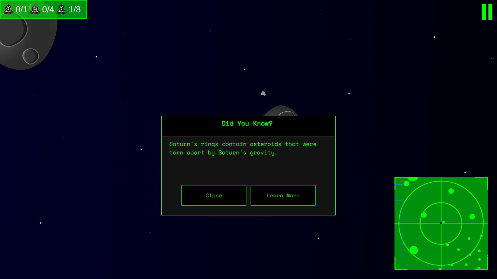
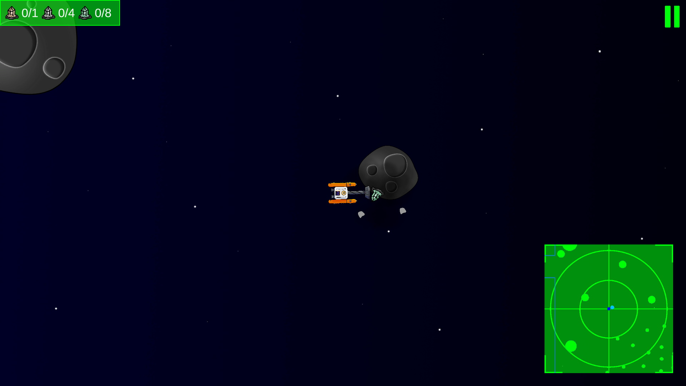
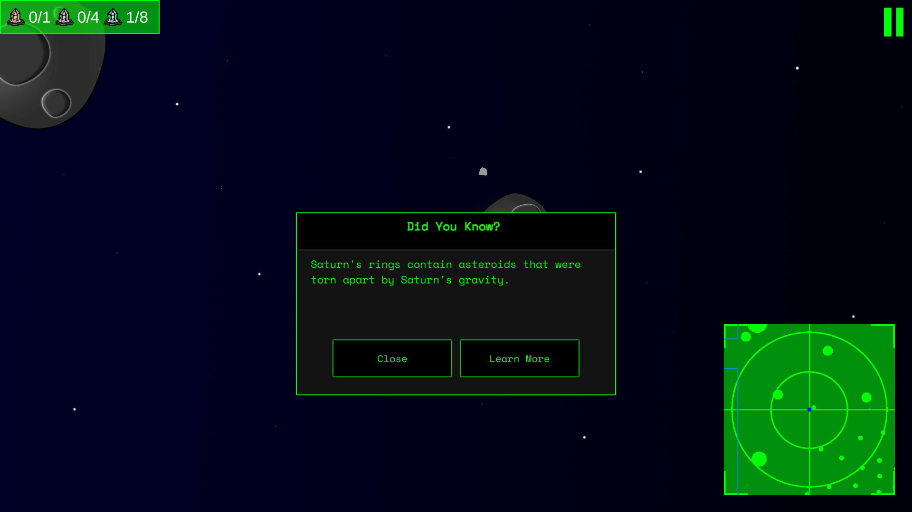
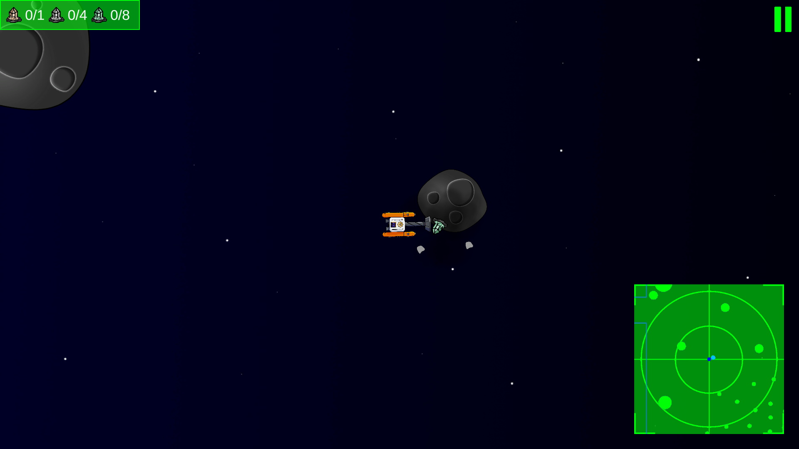

Drift is a multiplayer survival crafting game where players explore, collect resources, and build custom ships and bases.
I joined the Drift team in April 2025 as a Level Designer, with the goal of producing handcrafted regions for players to explore in the next major update of the game.


 



Design
The main gameplay loop of Space Collector involves exploring and mining. When the player mines a bonus
mineral deposit, a quick space fact appears on screen with a link to another web page with more information.
We specifically chose to deploy the game through WebGL so that it could be played on any device without
having to download files, making it easier to implement in a classroom.
The game is intended to be accessible to players who do not have lots of game literacy. The difficulty is
generally kept low, but mining bonus asteroids can be more challenging.